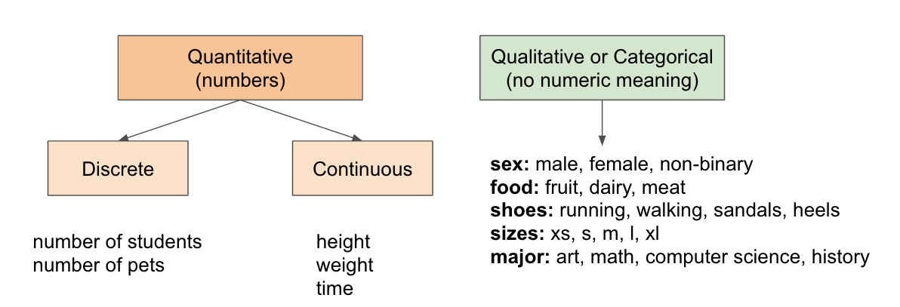

Lesson 1 - Data All Around You
At the end of this lesson, you will be able to:
- Explain what data and datasets are, using examples from your own life.
- Read a dataset as rows (the things being described) and columns (the facts about them).
- Classify data as categorical or quantitative, and classify quantitative data as discrete or continuous.
- Describe what Python libraries like pandas, matplotlib, and seaborn will do for us in this unit - and what your actual job will be.
You're already swimming in data
"Data" sounds like a word that belongs to labs and server rooms, but here's the secret: data is just observations that someone wrote down. That's it. Any time anyone records a fact about the world - a number, a category, a timestamp, a yes-or-no - they're making data.
Which means you're generating it constantly:
- Your phone quietly counts your steps every day. 6,412 on Monday, 11,208 on Saturday (you walked to the food carts and back) - that's data.
- The coffee shop down the street rings up every sale: what drink, what size, what time, how much. By the end of a week that's hundreds of little recorded facts - data.
- Spotify Wrapped exists because Spotify wrote down every single song you played all year, then added it all up in December to gently expose you. Also data.
None of these observations is impressive on its own. "One latte, 8:14 am, $5.50" tells you almost nothing. The magic happens when you collect a lot of related observations together and start looking for patterns - and that's what this whole unit is about.
Datasets: data with its act together
A dataset is a collection of related observations, organized so you can actually ask questions of it. The most common shape for a dataset - and the shape we'll use all unit - is a table:
- Each row is a thing - one dog breed, one coffee sale, one day of steps.
- Each column is a fact about those things - a name, a weight, a price, a count.
Here's a tiny dataset about dog breeds (you'll be seeing a lot more of these dogs - this unit's main dataset has 105 breeds in it):
| Breed | Breed Group | Max Life Span (years) | Max Weight (lbs) |
|---|---|---|---|
| Australian Shepherd | Herding | 16 | 65.0 |
| Beagle | Hound | 15 | 30.0 |
| Great Dane | Working | 10 | 175.0 |
| Chihuahua | Toy | 18 | 6.5 |
Every row is one breed; every column is one fact about that breed. Once data is in this shape, you can ask real questions: which breeds live longest? Do heavier dogs live shorter lives? How many Herding breeds are there? (Notice that you could make exactly the same kind of table for coffee sales or your step counts - the shape is the same even when the topic changes completely.)
One aside before we move on: not all data is table-shaped. Photos, voice memos, the text of your emails - those are data too, just messier ("unstructured" is the term of art, versus tidy "structured" tables like ours). Analyzing that kind of data is a whole field of its own; in this unit we're sticking to tables, because tables are where data analysis is easiest to learn - and honestly, where a huge amount of real-world analysis happens anyway.
Two big kinds of data
Here's the most important idea in this lesson - the one you'll use directly in Assignment 4, so let's take it slowly. Every column in a dataset holds one of two kinds of data:
- Categorical data (also called qualitative) puts things into groups. Breed names, breed groups, pizza toppings, majors. There's no math to do here - "Herding + Hound" isn't a thing, and there's no meaningful "average breed."
- Quantitative data is genuinely numeric - amounts and measurements you can do math on. Life spans, weights, prices, step counts. Averages, sums, and "which is bigger?" all make sense.
And quantitative data splits one more time:
- Discrete data is counted - it comes in separate steps with nothing in between. Number of dogs, number of siblings, number of lattes sold. You can sell 3 lattes or 4 lattes, but never 3.7 lattes.
- Continuous data is measured - between any two values there's always another possible value. Weight, height, time. A dog can weigh 30 lbs, 30.5 lbs, 30.47 lbs, &c. - it just depends how precise your scale is.

Let's walk through our dog table with this lens:
- Breed ("Beagle", "Great Dane") - categorical. It's a name, a label. No math possible.
- Breed Group ("Hound", "Working") - also categorical. It's a group label, even though we can count how many breeds fall into each group (and we will - that count is quantitative, but the group itself isn't).
- Max Life Span (16, 15, 10 years) - quantitative, and as recorded here it behaves like discrete data: the dataset only uses whole years, so the values come in steps. (Time itself is continuous - a dog doesn't live exactly 15.000 years - but once you round to whole years, you're working with discrete values. Data type can depend on how the data was recorded, not just what it measures. Sneaky, right?)
- Max Weight (65.0, 6.5 lbs) - quantitative and continuous. Any weight in between is possible; the decimals are a giveaway.
One trap to watch for: a value made of digits isn't automatically quantitative. The 72 bus, zip code 97214, your student ID - those are numbers used as labels. The test is whether math makes sense: the average of two zip codes is not a place halfway between them, so zip codes are categorical.
Try it! Classify each of these as categorical or quantitative - and if it's quantitative, decide whether it's discrete or continuous:
- The number of siblings you have
- The bus line you take to campus (the 72, the 20, ...)
- The time it takes you to run (or let's be honest, walk) a mile
- A T-shirt size (S, M, L, XL)
- Your step count for yesterday
- Your favorite food cart's cuisine (Thai, tacos, pierogies, ...)
Show answers
- Quantitative, discrete. Siblings are counted, and nobody has 2.4 of them.
- Categorical! This is the trap. "72" is a label, not an amount - the average of the 72 and the 20 is not the 46 bus.
- Quantitative, continuous. Time is measured; between 12 minutes and 13 minutes there are infinitely many possible times.
- Categorical. The sizes have an order (S < M < L), but they're still labels - there's no "M + L" and no meaningful average size.
- Quantitative, discrete. Steps are counted, one whole step at a time.
- Categorical. Delicious, but not numeric.
Why do we care so much about this? Because the kind of data determines what you can do with it - which summaries make sense, and (as you'll see over the next several lessons) which chart you should reach for. Bar charts love categorical data; histograms and scatter plots want quantitative data. Get the classification wrong and the chart comes out as nonsense.
Where Python comes in
Our dog dataset has 105 rows. That's small, as datasets go - real ones routinely have thousands or millions of rows - and yet even 105 is too many to eyeball. Quick, from the spreadsheet alone: how many breeds have a max life span of 15 years? You could count them by hand. You would also hate it, and you'd probably miscount around row 60.
This is exactly the kind of tedious, repetitive work computers are for (Unit 5 said hello). In this unit we'll use Python with three libraries that data folks reach for constantly:
- pandas - loads a spreadsheet (a CSV file) into Python as a table and lets us slice, count, and summarize it.
- matplotlib - draws charts: bar charts, histograms, scatter plots, all of it.
- seaborn - a chart library built on top of matplotlib that makes certain charts easier and prettier. Several of this unit's notebooks use it.
Here's the part you should actually relax about: the code in this unit is already written for you. The notebooks we'll work in come pre-built, and your job is to read the code, tweak it (change which column gets charted, change a label, change a setting), and - the real skill - interpret what the resulting chart is telling you. You've spent five units learning to read Python; now you get to use that literacy the way most people in most jobs actually do: to understand and adjust code, not to write it from a blank page.
This corner of computing has a name, by the way: data science - the craft of pulling honest insight out of data, sitting right at the intersection of programming and statistics. This unit is your taste of it. (And it feeds directly into the next unit: modern AI is, at its heart, built by pouring enormous datasets into algorithms. Everything you learn here about data - what it is, how it can mislead - carries straight over.)
Coming up next: before we make a single chart of our own, we're going to learn to read other people's charts - specifically, the ways charts in your feed, the news, and ads can be technically accurate and still completely misleading. Consider it self-defense.